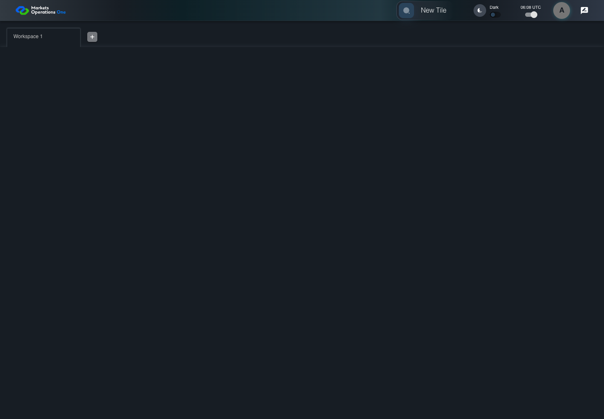

UI-CAT-009 trim regional display labels
PASS · application/run-050/ui-cat-009-trim-regional-display-labels-18e774b766b9-attempt-1 · ACTUAL_APPLICATION_LOCAL_SERVICES
Actual current React shell. Controlled login, validation, and activity renewal responses supply UI-USER-01, catalog, and entities. A controlled SystemJS React container displays routes and parameters. Local fixture SVGs replace catalog images. Identity, entitlements, and business tenant behavior are not established.
2026-10-22T06:08:02.050Z to 2026-10-22T06:08:05.411Z
Assertions and result · Artifact manifest · Exact run inputs and source hashes
Result SHA-256:1550a64830ecb38689cffde0cedb4d82bdf30950df77e698f9b6d792dea31100Screenshot capture: CAPTURED. Named frames: 6.
Step screenshot bindings: COMPLETE. 5/5 canonical steps have execution screenshots.
Bindings measure structural coverage only. They do not establish screenshot content quality or relevance.
Screenshot content review: NOT_REVIEWED. Recorded context: 0/6 frames. Identical image bytes: 4 repeated frames. Recorded context does not establish human visual review.
Canonical step timeline
Given User A is authenticated as fixture UI-USER-01 with the case-specific permissions
Execution: PASSED.
1. step-01 Visible state after step 1: Given User A is authenticated as fixture UI-USER-01 with the case-specific permissions
2026-10-22T06:08:03.933Z · 1440×1000
Step: /Users/lushevol/code/github/ratan-release-impact/workbench/tasks/ui-test-coverage-20261022/test-cases.md:6530
SHA-256:fcdb7e886745751817c5a9e551fd47a62899d6497092ca8f80a5c9e3d9e7d6d1And T-ID has entryName with surrounding spaces
Execution: PASSED.
2. step-02 Visible state after step 2: And T-ID has entryName with surrounding spaces
2026-10-22T06:08:04.074Z · 1440×1000
Step: /Users/lushevol/code/github/ratan-release-impact/workbench/tasks/ui-test-coverage-20261022/test-cases.md:6531
SHA-256:fcdb7e886745751817c5a9e551fd47a62899d6497092ca8f80a5c9e3d9e7d6d1Image bytes match frame 1. An unchanged image can be valid for consecutive assertions. This match does not establish correct step content.
When User A clicks section with text "New Tile" inside the shell application bar
Execution: PASSED.
3. step-03 Visible state after step 3: When User A clicks section with text "New Tile" inside the shell application bar
2026-10-22T06:08:04.491Z · 1440×1000
Step: /Users/lushevol/code/github/ratan-release-impact/workbench/tasks/ui-test-coverage-20261022/test-cases.md:6532
SHA-256:038624ee9f62cdcc2c49a36e0f3039cf34a72f38010c62c38bc03c9292abec69Then button named "Indonesia" inside the section identified by title "Test Tile" and subtitle "Demo" has exact text "Indonesia"
Execution: PASSED.
4. step-04 Visible state after step 4: Then button named "Indonesia" inside the section identified by title "Test Tile" and subtitle "Demo" has exact text "Indonesia"
2026-10-22T06:08:04.595Z · 1440×1000
Step: /Users/lushevol/code/github/ratan-release-impact/workbench/tasks/ui-test-coverage-20261022/test-cases.md:6533
SHA-256:038624ee9f62cdcc2c49a36e0f3039cf34a72f38010c62c38bc03c9292abec69Image bytes match frame 3. An unchanged image can be valid for consecutive assertions. This match does not establish correct step content.
And image with alt text "Indonesia icon" inside the button named "Indonesia" in that tile section is visible
Execution: PASSED.
5. step-05 Visible state after step 5: And image with alt text "Indonesia icon" inside the button named "Indonesia" in that tile section is visible
2026-10-22T06:08:04.743Z · 1440×1000
Step: /Users/lushevol/code/github/ratan-release-impact/workbench/tasks/ui-test-coverage-20261022/test-cases.md:6534
SHA-256:038624ee9f62cdcc2c49a36e0f3039cf34a72f38010c62c38bc03c9292abec69Image bytes match frame 4. An unchanged image can be valid for consecutive assertions. This match does not establish correct step content.
Additional named frames
The final visible state after the named test assertions.
2026-10-22T06:08:04.902Z · 1440×1000Step: Test source: /Users/lushevol/code/github/ratan-release-impact/workbench/e2e/audit-specs/catalog-profile-expanded.spec.ts:120
SHA-256:
038624ee9f62cdcc2c49a36e0f3039cf34a72f38010c62c38bc03c9292abec69Image bytes match frame 5. An unchanged image can be valid for consecutive assertions. This match does not establish correct step content.
Screenshots establish visible state only. Assertions and traces support functional claims.